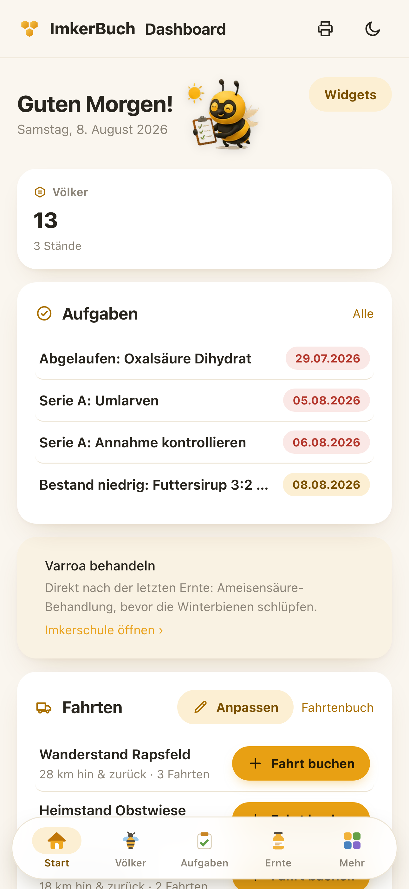
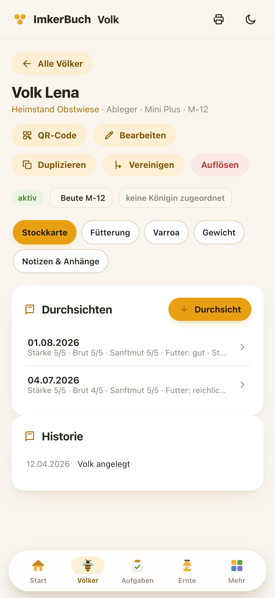
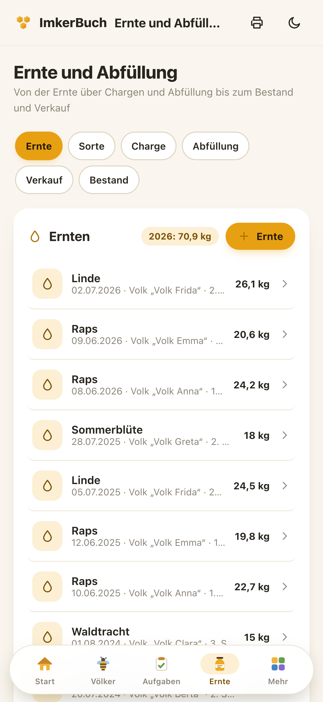
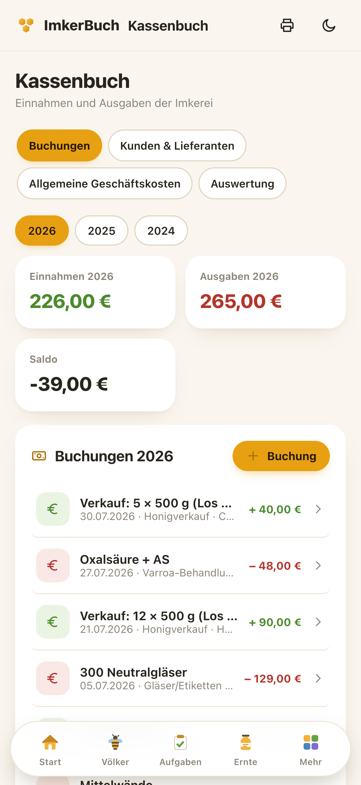

Das ganze Imkerjahr —
auf deinem Gerät.
Von der ersten Durchsicht bis zur Rechnung. Auch ohne Netz am Stand.
Von der ersten Durchsicht bis zur Rechnung. Auch ohne Netz am Stand.

Völker, offene Aufgaben, Fahrten zum Stand — und der Hinweis, was diese Woche dran ist.

Durchsichten, Stärke, Futter, Varroa — mit eigenen Feldern und lückenloser Historie.


Chargen, Losnummern, Abfüllung, Bestand — und die Einnahme steht ohne Zutun im Kassenbuch.